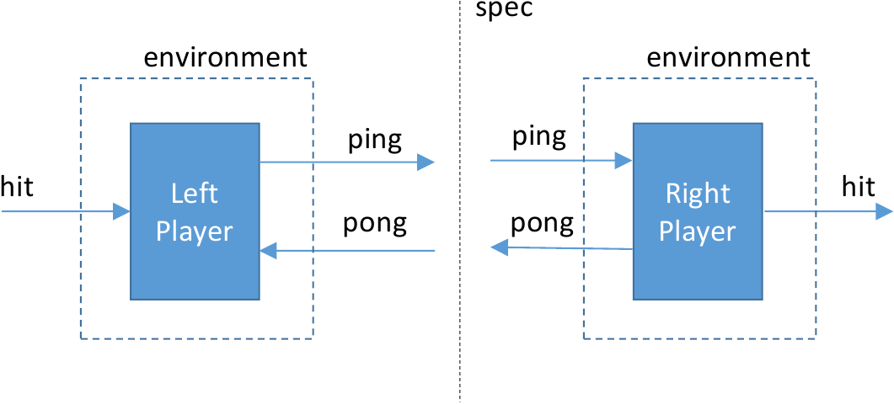

Specifications
Formal verification is primarily about establishing relationships between specifications at differing levels of abstraction. The same can be said of compositional testing. The difference is that in the compositional testing approach, we combine formal proof with specification-based testing to increase our confidence in the correctness of a system.
Consider, for example, a network protocol, such as the TCP protocol that is widely used to communicate streams of data over the Internet. At a high level of abstraction, TCP is a service, providing methods for establishing connections, and sending or receiving data. This service provides guarantees to its users of reliable in-order transmission of streams of bytes. At a lower level of abstraction, TCP can be seen as a protocol. The protocol is a set of rules (laid out in RFC 675 and later documents) that implements service guarantees of TCP by exchanging datagrams over an unreliable network.
The service and protocol specifications of TCP are views of the same process observed at different interfaces. That is, TCP is sandwiched between a higher-level application (say, a web browser and web server) and the lower-level datagram protocol (typically the IP protocol) as shown below:

The TCP service specification describes the events we observe at the interface between the application layer and the transport layer. The IP service specification describes the events we observe at the interface between the transport layer and the network layer. The TCP protocol specification describes the relation between events at this interface and the lower-level interface between transport and network layers.
If we were developing the TCP protocol specification, we would like to verify that the IP service and the TCP protocol together implement the TCP service specification. That is, if events at the transport/network interface are consistent with the IP service specification, and if we execute the TCP protocol according to its specification, then events at the application/transport interface should be consistent with the TCP service specification. From the point of view of the TCP protocol, we say that the IP service specification is an assumption, while the TCP service specification is a guarantee.
IVy has features that allow us to combine testing with formal verification to perform this kind of reasoning. It allows us to:
- Define objects with interfaces
- Write specifications about interfaces
- Test assume/guarantee relationships between these specifications
In IVy, interfaces and specifications are objects. An interface is an object with unimplemented actions (a bit like an instance of an abstract class in C++). A specification is a special object that monitors the calls and returns across an interface and makes assertions about their correctness.
Monitors as specifications
To specify services such as TCP, we need to make assertions about the sequences of events that can occur at an interface. For example, in TCP, we need to make statements relating the sequences of send and receive events to abstract data streams that are transmitted between clients. Specifications about sequences of events in time are often referred to as temporal specifications.
A common approach to temporal specification is to define a specialized logical notation called a temporal logic. These notations make it possible to write succinct temporal specifications, and also us to do some proofs in a fully automated way using model checking.
IVy takes a different approach. Temporal specifications in IVy are defined using special objects called monitors. A monitor is an object that synchronizes its actions with calls and returns across an interface. This allows the monitor to record information about the history of the interface in its local state, and to assert facts that should be true about interface events based on the history of previous events.
As an example, here is a definition of an interface for a ridiculously simple network service:
#lang ivy1.6
type packet
object intf = {
action send(x:packet)
action recv(x:packet)
}
The type packet is an example of an uninterpreted type. We don’t
yet know want the contents of a packet are, but we can fill in the
definition of packet later.
The actions in an interface object don’t have definitions. These will be filled in by other objects that implement the different roles in the interface. We don’t know yet what these objects actually do, but we can write a service specification that tells us something about the temporal behavior at the interface:
object spec = {
relation sent(X:packet)
after init {
sent(X) := false
}
before intf.send {
sent(x) := true
}
before intf.recv {
assert sent(x)
}
}
Object spec is a monitor. It has one local state component sent
that records the set of packets that have been sent so far. The
after init declaration says that, initially, no packet X has been sent.
In the Ivy language, symbols beginning with
capital letters are logical variables. Unbound variables are
implicitly universally quantified.
Information about sent packets is recorded by inserting an action
before every call to intf.send. This is done using a before
declaration in the specification. Notice that the inserted action can
refer to the parameters of intf.send and it can update the monitor
state. In addition, the monitor inserts an assertion before every
call to intf.recv. This assertion states that the received packet
x has previously been sent.
In effect, our service specification describes a channel that can re-order and duplicate packets, but cannot corrupt packets. If any corrupted packet is received, the assertion will fail.
Now let’s consider some possible implementations of this very simple specification. Here is the most trivial one:
object protocol = {
implement intf.send {
call intf.recv(x)
}
}
Object protocol provides the implementation of action intf.send
using an implement declaration. This declaration provides the
missing body of the action intf.send. The implementation simply calls intf.recv
on the sent packet x. The assertion in monitor spec is always
true, since before calling intf.send, the packet x is added to the
relation sent. That is, our implementation trivially satisfies the
specification “receive only sent packets”.
To verify our implementation, we need to put it in a suitable
environment. The following statements tell us that the environment
will implement intf.recv and will call intf.send:
import intf.recv
export intf.send
In order to test our program, we need to give a concrete interpretation to
the abstract type packet. It doesn’t much matter what this interpretation is.
This statement tells IVy to represent packets using 16-bit binary numbers:
interpret packet -> bv[16]
Now, let’s do some verification. The IVy compiler can translate our
program into C++, and also generate a randomized tester that takes the
role of the environment. We save the above text to the file
trivnet.ivy, then compile like this:
$ ivy_to_cpp target=test build=true trivnet.ivy
g++ -I $Z3DIR/include -L $Z3DIR/lib -g -o trivnet trivnet.cpp -lz3
The command line options tell ivy_to_cpp to generate a test environment
and to use the C++ compiler to generate an executable file. When we run the
executable, the output looks like this:
./trivnet
> intf.send(61468)
< intf.recv(61468)
> intf.send(49878)
< intf.recv(49878)
> intf.send(18736)
< intf.recv(18736)
> intf.send(41051)
< intf.recv(41051)
...
The output lines beginning with > represent calls from the test
environment into the system, while lines beginning with < are calls
from the system into the environment. The specification monitor is
checking that every call to intf.recv corresponds to some previous
call to intf.send. This input values are just random 16-bit
numbers. Since our implementation is correct, no errors are flagged.
To get a better idea of what is happening with before and
implements, we can print out the program that results from inserting
the monitor actions and interface implementations. Here is part of the output:
$ ivy_show trivnet.ivy
type packet
relation spec.sent(V0:packet)
after init {
spec.sent(X) := false
}
action intf.recv(x:packet) = {
assert spec.sent(x)
}
action intf.send(x:packet) = {
spec.sent(x) := true;
call intf.recv(x)
}
Notice that the before actions of spec have been inserted at the
beginning of these actions, and the implement action of protocol
has been used as the body of intf.send.
Of course, we might consider a (slightly) less trivial implementation, such as this one that implements the service specification with a one-place buffer:
object protocol = {
individual full : bool
individual contents : packet
after init {
full := false
}
implement intf.send {
full := true;
contents := x
}
action async = {
if full {
full := false;
call intf.recv(contents)
}
}
}
This implementation has an action async that needs to be called by the
environment, so we add:
export protocol.async
The output from the tester looks like this:
./trivnet2
> intf.send(59132)
> intf.send(18535)
> protocol.async()
< intf.recv(18535)
> intf.send(11708)
> intf.send(15030)
> protocol.async()
< intf.recv(15030)
> intf.send(64574)
> intf.send(23863)
> intf.send(63393)
> protocol.async()
< intf.recv(63393)
The tester is calling intf.send and protocol.async uniformly at
random (with a probability of 0.5 for each). We can see that some
packets (for example the first) are dropped.
Let’s put a bug in the protocol to see what happens. The action
bug below corrupts the packet buffer:
action bug(p:packet) = {
contents := p
}
...
export protocol.bug
Here’s a test run:
./trivnet3
> protocol.async()
> protocol.async()
> intf.send(18535)
> protocol.bug(61184)
> intf.send(31188)
> intf.send(18749)
> protocol.async()
< intf.recv(18749)
> protocol.bug(6178)
> intf.send(28724)
> protocol.bug(45283)
> protocol.bug(6070)
> protocol.bug(2590)
> protocol.bug(10158)
> protocol.async()
trivnet3.ivy: line 22: : assertion failed
At some point, the environment calls bug then async causing the
protocol to deliver a wrong packet value. We can see that the
specification monitor is in fact running, and it gives an error
message pointing to the line in the code where an assertion failed.
Assume-Guarantee reasoning in IVy
In the previous example, we saw that a service specification is a kind of abstraction. It hides details of the underlying implementation, telling us only what we need to know to use the service. Abstractions are crucial in reasoning about complex systems. They allow us to develop one component of a system without thinking about the details of the implementation of other components. For example, when developing a network application based on TCP, we don’t have to read RFC 675. We just rely on the simple service guarantee that TCP provides (reliable, in-order delivery). The service specification allows us to think about our application in isolation from the network protocol stack.
IVy provides a mechanism to do just this when proving correctness of system components. That is, we can isolate a single object in our system and prove its correctness using only the service specifications of its interfaces.
As an example, let’s build a system of two components that plays a highly simplified game of ping-pong. Here is the interface definition:
#lang ivy1.6
object intf = {
action ping
action pong
}
Here is the interface specification:
type side_t = {left,right}
object spec = {
individual side : side_t
after init {
side := left
}
before intf.ping {
assert side = left;
side := right
}
before intf.pong {
assert side = right;
side := left
}
}
The specification has a single state component side that keeps track
of whether the ball is on the left- or right-hand side of the
table. When the ball is on the left, a ping action is allowed,
sending the ball to the right-hand side. When the ball is on the
right, a pong is allowed, sending the ball to the left again. A
failure to alternate ping and pong would cause one of the
assertions to fail.
Now let’s implement the left-hand player:
object left_player = {
individual ball : bool
after init {
ball := true
}
action hit = {
if ball {
call intf.ping;
ball := false
}
}
implement intf.pong {
ball := true
}
}
The player has a Boolean ball that indicates the ball is in the
player’s court. We assume the left player serves, so ball is
initially true. If the left player has the ball, the hit action
will call ping, sending the ball to the right, and set ball to false. The
left player implements ping by setting ball to true.
The right-hand player is similar:
object right_player = {
individual ball : bool
after init {
ball := false
}
action hit = {
if ball {
call intf.pong;
ball := false
}
}
implement intf.ping {
ball := true
}
}
Let’s export the hit actions to the environment, so the players
will do something:
export left_player.hit
export right_player.hit
Here is the call graph of the system we have defined:

Now what we want to do is to generate testers for the left and right
players in isolation. That is, we want the tester for the left player
to act as its environment. This means the tester has to call both
left_player.hit and intf.pong. Similarly, the tester for the right
player has to call right_player.hit and intf.ping.
To generate these testers, we use isolate declarations:
isolate iso_l = left_player with spec
isolate iso_r = right_player with spec
The first says to isolate the left player using the interface
specification spec. The second says to do the same thing with the
right player. This reduces the system verification problem to two
separate verification problems called “isolates”.
Here’s the call graph for the left player isolate iso_l:

We can see what the first isolate looks like textually as follows (leaving a few things out):
$ ivy_show isolate=iso_l pingpong.ivy
individual spec.side : side_t
relation left_player.ball
action ext:left_player.hit = {
if left_player.ball {
call intf.ping;
left_player.ball := false
}
}
action intf.ping = {
assert spec.side = left;
spec.side := right
}
action ext:intf.pong = {
assume spec.side = right;
spec.side := left;
left_player.ball := true
}
Several interesting things have happened here. First, notice the
action intf.ping. We see that the code inserted by spec is
present, but the implementation provided by right_player is missing.
In effect, the right player has been abstracted away: we see neither
its state nor its actions. Further, notice that the action pong has
been exported to the environment. It contains the monitor code from
spec and also the left player’s implementation of pong. There is a
crucial change, however: the assert in the specification of pong
has changed to assume.
This is an example of assume-guarantee reasoning. The left player
guarantees to call ping only when the ball is on the
left. However, it assumes that the right player only calls pong
when the ball is on the right. This is a very common situation in protocols.
Each participant in the protocol guarantees correctness of its outputs,
but only so long as its inputs are correct.
Let’s start by testing the left player. First, we compile a tester:
$ ivy_to_cpp isolate=iso_l target=test build=true pingpong.ivy
g++ -I $Z3DIR/include -L $Z3DIR/lib -g -o pingpong pingpong.cpp -lz3
Notice we specified the isolate iso_l on the command line. Now
let’s run pingpong:
$ ./pingpong
> left_player.hit()
< intf.ping
> left_player.hit()
> intf.pong()
> left_player.hit()
< intf.ping
> left_player.hit()
> intf.pong()
> left_player.hit()
< intf.ping
...
We can see that the environment (the calls marked with >) is
respecting the assumption of the left player that pong occurs only
when the ball is on the right, that is, after a ping. The tester is
sampling uniformly out of just the actions that satisfy the isolate’s
assumptions. You may notice that sometimes the environment calls hit
when the left player doesn’t have the ball. This is not a problem,
since a hit has no effect in this case. What if we neglected to test whether the left player in fact has the ball in the implementation?
Let’s try it. That is, let’s use this version of the left player’s hit action:
action hit = {
call intf.ping;
ball := false
}
Here’s what we get:
$ ./pingpong_bad
> left_player.hit()
< intf.ping
> left_player.hit()
pingpong_bad.ivy: line 15: : assertion failed
The left player hits when it shouldn’t and causes a failure of the
precondition of ping.
Now let’s consider try right player. We compile and run a tester for
the isolate iso_r:
$ ivy_to_cpp isolate=iso_r target=test build=true pingpong.ivy
g++ -I $Z3DIR/include -L $Z3DIR/lib -g -o pingpong pingpong.cpp -lz3
$ ./pingpong
> right_player.hit
> right_player.hit
> right_player.hit
> intf.ping
> right_player.hit
< intf.pong
> right_player.hit
> intf.ping
> right_player.hit
< intf.pong
> intf.ping
Here we see that the testing environment is generating calls to ping
and right_player.hit. The ping calls satisfy the precondition of
ping, that is, ping is only called when the ball is on the left
side. The specification monitor is checking that the pong calls
generated by the right player satisfy the precondition of pong.
So what have we done so far? We’ve verified by randomized testing the the left player guarantees correct pings assuming correct pongs. We’ve also verified by testing that the right player guarantees correct pongs given correct pings. Since neither the pings nor the pongs can be the first to fail, we can conclude that all pings and pongs are correct according to the specification.
We can ask IVY to check this conclusion for us:
$ ivy_check trusted=true pingpong.ivy
Checking isolate iso_l...
Checking isolate iso_r...
OK
The option trusted=true tells IVy to trust that the specified
isolates are correct, facts that we have tested, but not formally
verified. IVy says it can prove based on this assumption that all of
our assertions are true at all times.
Is this really a proof?
In creating the two isolates iso_l and iso_r, we reduced a proof
goal to two simpler sub-goals. In theorem provers, this kind of
reduction is called a tactic. We must take care that our tactics
are logically sound. That is, is the two sub-goals are provable, then
the original goal must also be provable.
Let’s try informally to justify the soundness of our tactic. Ivy performed two transformations to produce each isolate: it changed some assertions to assumptions, and it deleted the actions and state components of one of the two players.
Pseudo-circular proofs
At first blush, changing assertions to assumptions seems to be unsound
because of a logical circularity. That is, we assumed ping to prove
pong and pong to prove ping. This apparent circularity is broken
by the fact that when proving ping, we only assume pong has been
correct in the past. When verifying iso_l, we show that the
assertion about ping is not the first assertion to fail. When
verifying iso_r, we show that the assertion about pong is not the
first assertion to fail. Since no assertion is the first to fail, we
know no assertion ever fails (this is an argument by induction over time).
Abstraction
In isolating the left player, IVy deleted all the actions and state components of the right player. This is a form of abstraction known as localization. The idea is that the truth of some assertions does not depend on certain components of the system. But in what cases is this a sound abstraction? That is, when can we infer that an assertion is true from the fact that it is true in the abstracted system? A sufficient condition is that the abstracted actions can have no side effect that is visible to the remaining actions. We will call this condition non-interference.
IVy uses a fairly simple analysis to check non-interference. As an example, suppose the right player tries to cheat by putting the ball back in the left player’s court without hitting it:
object right_player = {
...
implement intf.ping {
left_player.ball := true
}
...
}
Here’s what happens when when we try to verify this version:
$ ivy_check trusted=true interference.ivy
Checking isolate iso_l...
interference.ivy: line 30: error: Call out to right_player.intf_ping[implement] may have visible effect on left_player.ball
interference.ivy: line 37: referenced here
interference.ivy: line 20: referenced here
interference.ivy: line 30: referenced here
interference.ivy: line 27: referenced here
IVy can’t abstract away the right player’s implementation of
intf.ping because of the possible side effect on left_player.ball.
IVy’s analysis of interference is based only on which state components
are referenced and assigned. It’s easy to construct an example where
two objects share a variable, but do not actually interfere, for
example, because they reference disjoint elements of an array. IVy
will flag this as an error, since its analysis is not precise enough
to show non-interference. IVy is designed to reason about objects that
share interfaces, but not variables.
Coverage
To be sound, our tactic must also ensure that every assertion in the program is verified in some isolate. IVy checks this for us. Suppose, for example, we remove this isolate declaration from our ping-pong program:
isolate iso_r = right_player with spec
Here is what happens when we try to verify the program:
$ ivy_check trusted=true coveragefail.ivy
coveragefail.ivy: line 20: error: assertion is not checked
coveragefail.ivy: line 5: error: ...in action intf.pong
coveragefail.ivy: line 49: error: ...when called from right_player.hit
error: Some assertions are not checked
IVy is telling us that the precondition of action pong isn’t checked
when it’s called from right_player, because we haven’t created an
isolate for right_player.
The isolate declaration
Now let’s look at the isolate declaration in more detail. Here is the declaration
that isolates the left player:
isolate iso_l = left_player with spec
This creates an isolate named iso_l in which the guarantees of left_player are
checked. The actions of all objects except for left_player and
spec are abstracted away (assuming they are non-interfering). If we
didn’t include spec in the with part of the declaration, then
spec would be abstracted away, and no assertions would be checked
(leading to an error message similar to the one above).
The remaining question is how IVy decides which assertions are
guarantees for left_player and which are assumptions. The default
rules are as follows.
A guarantee for a given object is any assertion occurring in:
- An implementation provided by the object
- A
beforemonitor of an action called by the object - An
aftermonitor of an implementation provided by the object
An assumption for a given object is any assertion occurring in:
- A
beforemonitor of an implementation provided by the object - An
aftermonitor action called by the object
(after specifications will be introduced in the next section).
This roughly corresponds to the intuition that an object makes assumptions about its inputs and guarantees about its outputs.
So what have we proved?
If all isolates are correct, and if IVy’s non-interference and
coverage checks succeed, then we can infer that all assertions in the
program are true at all times in all executions of the program. In
this case, ivy_check prints OK. Of course, we only verified the
isolates by randomized testing. This means there is a risk that we
missed a bug in a system component. Because IVy checked our
assume/guarantee proof, however, we know that if the whole system has
a bug, then one of the isolates must have a bug. If we test the
isolates long enough, we will eventually find it without testing the
system as a whole.